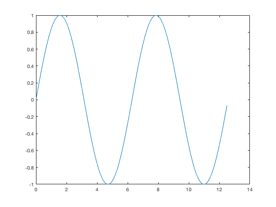
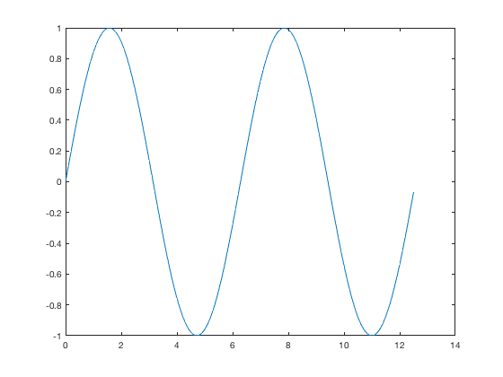

Publishing Example
Main content
Multiple paragraphs
Variable names x
Mathematics $
Contents
Plotting
t = 0:0.1:pi*4; y = sin(t); plot(t,y); for i = 1:12 x = 'asdf'; end
Main content
Multiple paragraphs
Variable names x
Mathematics $
t = 0:0.1:pi*4; y = sin(t); plot(t,y); for i = 1:12 x = 'asdf'; end